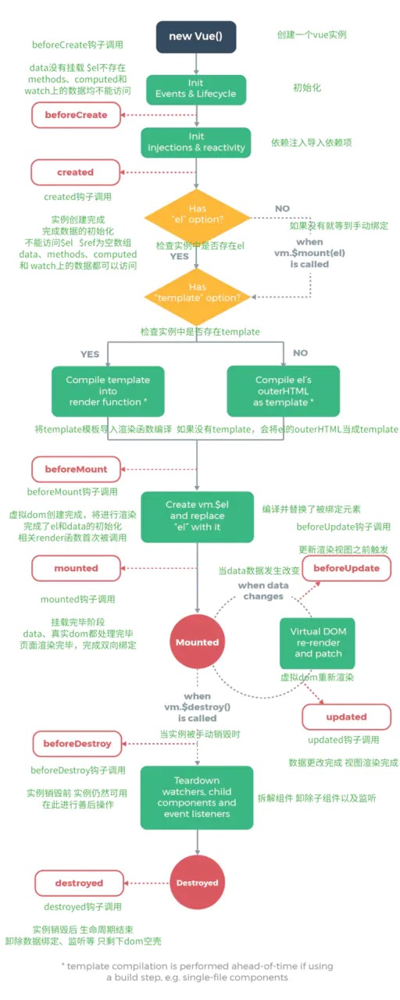

# 基础知识
# 钩子函数
其实和回调是一个概念，当系统执行到某处时，检查是否有
hook(钩子)，有的话就会执行回调。
通俗的说，hook就是在程序运行中，在某个特定的位置，框架的开发者设计好了一个钩子来告诉我们当前程序已经运行到特定的位置了，会触发一个回调函数，并提供给我们，让我们可以在生命周期的特定阶段进行相关业务代码的编写

总的来说，Vue的生命周期可以分为以下八个阶段
beforeCreate实例创建前created实例创建完成beforeMount挂载前mounted挂载完成beforeUpdate更新前updated更新完成beforeDestory销毁前destoryed销毁完成
# beforeCreate
这个钩子是
new Vue()之后触发的第一个钩子，在当前阶段中data、methods、computed以及watch上的数据和方法均不能被访问。
# created
这个钩子在实例创建完成后发生，当前阶段已经完成了数据观测，也就是可以使用数据，更改数据，在这里更改数据不会触发
updated函数。可以做一些初始数据的获取，在当前阶段无法与Dom进行交互，如果你非要想，可以通过vm.$nextTick来访问Dom。
# beforeMount
这个钩子发生在挂载之前，在这之前
template模板已导入渲染函数编译。而当前阶段虚拟Dom已经创建完成，即将开始渲染。在此时也可以对数据进行更改，不会触发updated
# mounted
这个钩子在挂载完成后发生，在当前阶段，真实的
Dom挂载完毕，数据完成双向绑定，可以访问到Dom节点，使用$refs属性对Dom进行操作。也可以向后台发送请求，拿到返回数据
# beforeUpdate
这个钩子发生在更新之前，也就是响应式数据发生更新，虚拟dom重新渲染之前被触发，你可以在当前阶段进行更改数据，不会造成重渲染
# updated
这个钩子发生在更新完成之后，当前阶段组件Dom已完成更新。要注意的是避免在此期间更改数据，因为这可能会导致无限循环的更新
# beforeDestroy
这个钩子发生在实例销毁之前，在当前阶段实例完全可以被使用，我们可以在这时进行善后收尾工作，比如清除计时器。
# destroyed
这个钩子发生在实例销毁之后，这个时候只剩下了dom空壳。组件已被拆解，数据绑定被卸除，监听被移出，子实例也统统被销毁
注意点
在使用生命周期时有几点注意事项需要我们牢记
1.除了beforeCreate和created钩子之外，其他钩子均在服务器端渲染期间不被调用。
2.上文曾提到过，在updated的时候千万不要去修改data里面赋值的数据，否则会导致死循环。
3.Vue的所有生命周期函数都是自动绑定到this的上下文上。所以，你这里使用箭头函数的话，就会出现this指向的父级作用域，就会报错。原因下面源码部分会讲解
# 源码解读
// src/core/instance/lifecycle.js
// callhook 函数的功能就是在当前vue组件实例中，调用某个生命周期钩子注册的所有回调函数。
// vm:Vue实例
// hook:生命周期名字
export function callHook (vm: Component, hook: string) {
pushTarget()
const handlers = vm.$options[hook]
// 初始化合并 options 的过程 、，将各个生命周期函数合并到 options 里
const info = `${hook} hook`
if (handlers) {
for (let i = 0, j = handlers.length; i < j; i++) {
invokeWithErrorHandling(handlers[i], vm, null, vm, info)
}
}
if (vm._hasHookEvent) {
vm.$emit('hook:' + hook)
}
popTarget()
}
// src/core/util/error.js
export function invokeWithErrorHandling (
handler: Function,
context: any,
args: null | any[],
vm: any,
info: string
) {
let res
try {
res = args ? handler.apply(context, args) : handler.call(context)
if (res && !res._isVue && isPromise(res) && !res._handled) {
res._handled = true
}
} catch (e) {
handleError(e, vm, info)
}
return res
}
我们从上面的代码中可以看到
callHook中调用了invokeWithErrorHandling方法，在invokeWithErrorHandling方法中，使用了apply和call改变了this指向，而在箭头函数中this指向是无法改变的，所以我们在编写生命周期函数的时候不能使用箭头函数
# beforeCreate和created
// src/core/instance/init
export function initMixin (Vue: Class<Component>) {
Vue.prototype._init = function (options?: Object) {
const vm: Component = this
...
// 合并选项部分已省略
initLifecycle(vm)
// 主要就是给vm对象添加了 $parent、$root、$children 属性，以及一些其它的生命周期相关的标识
initEvents(vm) // 初始化事件相关的属性
initRender(vm) // vm 添加了一些虚拟 dom、slot 等相关的属性和方法
callHook(vm, 'beforeCreate') // 调用 beforeCreate 钩子
//下面 initInjections(vm) 和 initProvide(vm) 两个配套使用，用于将父组件 _provided 中定义的值，通过 inject 注入到子组件，且这些属性不会被观察
initInjections(vm)
initState(vm) // props、methods、data、watch、computed等数据初始化
initProvide(vm)
callHook(vm, 'created') // 调用 created 钩子
}
}
// src/core/instance/state
export function initState (vm: Component) {
vm._watchers = []
const opts = vm.$options
if (opts.props) initProps(vm, opts.props)
if (opts.methods) initMethods(vm, opts.methods)
if (opts.data) {
initData(vm)
} else {
observe(vm._data = {}, true /* asRootData */)
}
if (opts.computed) initComputed(vm, opts.computed)
if (opts.watch && opts.watch !== nativeWatch) {
initWatch(vm, opts.watch)
}
}
- 我们可以看到
beforeCreate钩子调用是在initState之前的，而从上面的第二段代码我们可以看出initState的作用是对props、methods、data、computed、watch等属性做初始化处理。 - 通过阅读源码，我们更加清楚的明白了在beforeCreate钩子的时候我们没有对
props、methods、data、computed、watch上的数据的访问权限。在created中才可以
# beforeMount和mounted
// mountComponent 核心就是先实例化一个渲染Watcher
// 在它的回调函数中会调用 updateComponent 方法
// 两个核心方法 vm._render(生成虚拟Dom) 和 vm._update(映射到真实Dom)
// src/core/instance/lifecycle
export function mountComponent (
vm: Component,
el: ?Element,
hydrating?: boolean
): Component {
vm.$el = el
if (!vm.$options.render) {
vm.$options.render = createEmptyVNode
...
}
callHook(vm, 'beforeMount') // 调用 beforeMount 钩子
let updateComponent
if (process.env.NODE_ENV !== 'production' && config.performance && mark) {
updateComponent = () => {
// 将虚拟 Dom 映射到真实 Dom 的函数。
// vm._update 之前会先调用 vm._render() 函数渲染 VNode
...
const vnode = vm._render()
...
vm._update(vnode, hydrating)
}
} else {
updateComponent = () => {
vm._update(vm._render(), hydrating)
}
}
new Watcher(vm, updateComponent, noop, {
before () {
// 先判断是否 mouted 完成 并且没有被 destroyed
if (vm._isMounted && !vm._isDestroyed) {
callHook(vm, 'beforeUpdate')
}
}
}, true /* isRenderWatcher */)
if (vm.$vnode == null) {
vm._isMounted = true
callHook(vm, 'mounted') //调用 mounted 钩子
}
return vm
}
通过上面的代码，我们可以看出在执行
vm._render()函数渲染VNode之前，执行了beforeMount钩子函数，在执行完vm._update()把VNode patch到真实Dom后，执行mouted钩子。也就明白了为什么直到mounted阶段才名正言顺的拿到了Dom
# beforeUpdate和updated
// src/core/instance/lifecycle
new Watcher(vm, updateComponent, noop, {
before () {
// 先判断是否 mouted 完成 并且没有被 destroyed
if (vm._isMounted && !vm._isDestroyed) {
callHook(vm, 'beforeUpdate') // 调用 beforeUpdate 钩子
}
}
}, true /* isRenderWatcher */)
// src/core/observer/scheduler
function callUpdatedHooks (queue) {
let i = queue.length
while (i--) {
const watcher = queue[i]
const vm = watcher.vm
if (vm._watcher === watcher && vm._isMounted && !vm._isDestroyed) {
// 只有满足当前 watcher 为 vm._watcher（也就是当前的渲染watcher）
// 以及组件已经 mounted 并且没有被 destroyed 才会执行 updated 钩子函数。
callHook(vm, 'updated') // 调用 updated 钩子
}
}
}
- 第一段代码就是在
beforeMount和mounted钩子中间出现的，那么watcher中究竟做了些什么呢？ - 第二段代码的
callUpdatedHooks函数中什么时候才可以满足条件并执行updated呢？我们来接着往下看。
// src/instance/observer/watcher.js
export default class Watcher {
...
constructor (
vm: Component,
expOrFn: string | Function,
cb: Function,
options?: ?Object,
// 在它的构造函数里会判断 isRenderWatcher，
// 接着把当前 watcher 的实例赋值给 vm._watcher
isRenderWatcher?: boolean
) {
// 还把当前 wathcer 实例 push 到 vm._watchers 中，
// vm._watcher 是专门用来监听 vm 上数据变化然后重新渲染的，
// 所以它是一个渲染相关的 watcher，因此在 callUpdatedHooks 函数中，
// 只有 vm._watcher 的回调执行完毕后，才会执行 updated 钩子函数
this.vm = vm
if (isRenderWatcher) {
vm._watcher = this
}
vm._watchers.push(this)
...
}
看到这里我们明白了
Vue是通过watcher来监听实例上的数据变化，进而控制渲染流程
# beforeDestroy和destroyed
// src/core/instance/lifecycle.js
// 在 $destroy 的执行过程中，它会执行 vm.__patch__(vm._vnode, null)
// 触发它子组件的销毁钩子函数，这样一层层的递归调用，
// 所以 destroy 钩子函数执行顺序是先子后父，和 mounted 过程一样。
Vue.prototype.$destroy = function () {
const vm: Component = this
if (vm._isBeingDestroyed) {
return
}
callHook(vm, 'beforeDestroy') // 调用 beforeDestroy 钩子
vm._isBeingDestroyed = true
// 一些销毁工作
const parent = vm.$parent
if (parent && !parent._isBeingDestroyed && !vm.$options.abstract) {
remove(parent.$children, vm)
}
// 拆卸 watchers
if (vm._watcher) {
vm._watcher.teardown()
}
let i = vm._watchers.length
while (i--) {
vm._watchers[i].teardown()
}
...
vm._isDestroyed = true
// 调用当前 rendered tree 上的 destroy 钩子
// 发现子组件，会先去销毁子组件
vm.__patch__(vm._vnode, null)
callHook(vm, 'destroyed') // 调用 destroyed 钩子
// 关闭所有实例侦听器。
vm.$off()
// 删除 __vue__ 引用
if (vm.$el) {
vm.$el.__vue__ = null
}
// 释放循环引用
if (vm.$vnode) {
vm.$vnode.parent = null
}
}
}
- 通过上面的代码，我们了解了组件销毁阶段的拆卸过程，其中会执行一个
__patch__函数 - 除了这八种钩子外，我们在官网也可以查阅到另外几种不常用的钩子，这里列举出来
# 几种不常用的钩子
# activated
keep-alive组件激活时调用，该钩子在服务器端渲染期间不被调用。
# deactivated
keep-alive组件停用时调用，该钩子在服务器端渲染期间不被调用。
# errorCaptured
- 当捕获一个来自子孙组件的错误时被调用。此钩子会收到三个参数：错误对象、发生错误的组件实例以及一个包含错误来源信息的字符串。此钩子可以返回
false以阻止该错误继续向上传播 - 你可以在此钩子中修改组件的状态。因此在模板或渲染函数中设置其它内容的短路条件非常重要，它可以防止当一个错误被捕获时该组件进入一个无限的渲染循环。